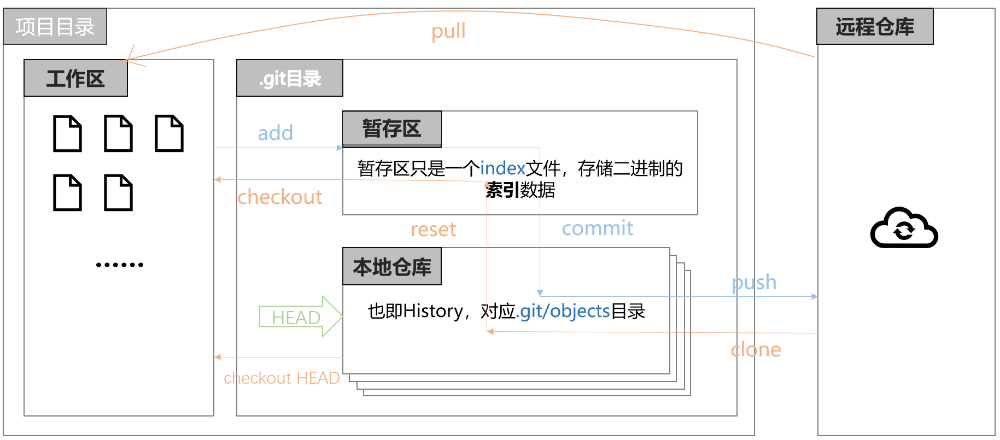
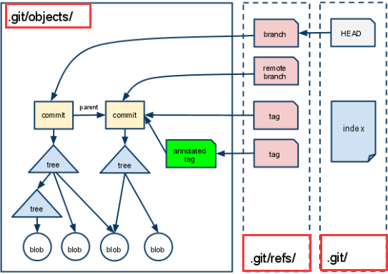
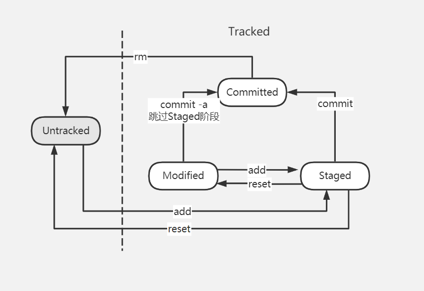
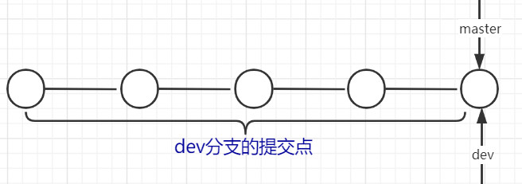
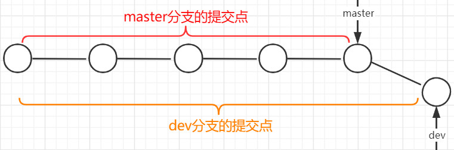
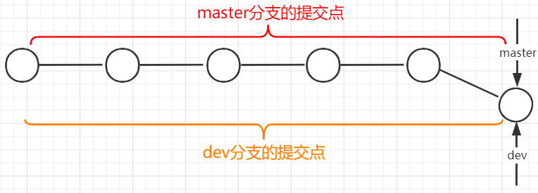
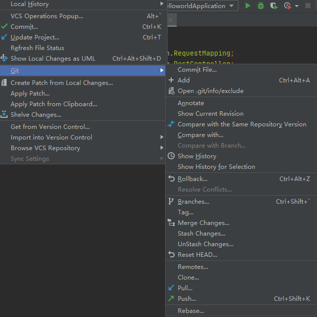

版本控制
版本控制（Revision control）是一种在开发的过程中用于管理我们对文件、目录或工程等内容的修改历史，方便查看更改历史记录，备份以便恢复以前的版本的软件工程技术。最重要的是可以实现跨区域多人协同开发。
本地版本控制系统
最流行的是RCS。
记录文件每次的更新，可以对每个版本做一个快照，或是记录补丁文件（补丁指文件修订前后的变化），适合个人用。

集中化版本控制系统
最流行的是SVN。
所有的版本数据都保存在服务器上，用户在服务器上同步更新或上传自己的修改。用户的本地只有自己以前所同步的版本，如果不连网的话，用户就看不到历史版本，也无法切换版本验证问题，或在不同分支工作。
管理员也可以轻松掌控每个开发者的权限，并且管理一个 CVCS 要远比在各个客户端上维护本地数据库来得轻松容易。
缺点是服务器的单点故障。如果宕机一小时，那么在这一小时内，谁都无法提交更新，也就无法协同工作。 如果中心数据库所在的磁盘发生损坏，又没有做恰当备份，毫无疑问你将丢失所有数据——包括项目的整个变更历史，只剩下人们在各自机器上保留的单独快照。 本地版本控制系统也存在类似问题，只要整个项目的历史记录被保存在单一位置，就有丢失所有历史更新记录的风险。当然可以在服务端进行主从备份。

分布式版本控制系统
最流行的是Git。
客户端拥有代码仓库的完整镜像，包括完整的历史记录。这么一来，任何一处协同工作用的服务器发生故障，事后都可以用任何一个镜像出来的本地仓库恢复。 因为每一次的克隆操作，实际上都是一次对代码仓库的完整备份。
对于数据权限敏感性高的公司来说不适用。

Git配置
使用git config命令查看所有的配置选项。其中：
查看系统配置：
git config --system -l，其配置文件所在：安装路径\Git\etc\gitconfig。查看用户配置：
git config --global -l，其配置文件所在：C:\Users\用户名\.gitconfig。设置用户名与邮箱（必要）：每次提交都会用到该用户标识。
1
2git config --global user.name "zhangsan"
git config --global user.email "1234@126.com"
Git的原理
Git三大区域
- 工作区：存放项目代码的地方。
- 暂存区：暂存区，用于临时存放你的改动，事实上它只是一个文件，保存即将提交到文件列表信息。
- 本地版本库：仓库区（或本地仓库），就是安全存放数据的位置，这里面有你提交到所有版本的数据，每提交一次修改就会有一个新的版本。其中HEAD指向最新放入仓库的版本。
三大区域与远程库交互的图示如下：

实体、引用与索引
实体
提交到本地仓库中的所有文件，包括每个提交的说明信息，目录结构等都会转换成实体。
所有实体均存在于.git/objects/目录中。
git中每一个实体以一个40字符长度的十六进制字符串来唯一标识。
- git中包括四种类型的实体：
- blob：文件内容。
- tree：文件名与目录结构。
- commit：提交的作者、日期与说明等。
- tag：指向某提交对象的引用。
引用
Git 中，一个分支（branch）、远程分支（remote branch）或一个标签（tag）仅是指向一个实体的一个指针，这里的实体通常是一个commit实体。这些引用以文本文件的形式存储在目录 .git/refs/ 中。
Git 有一种特殊的引用，称为符号引用。它并不直接指向一个实体，而是指向另一个引用。比如，.git/HEAD就是一个符号引用。它指向你正在工作的当前分支的最新版本，初始为main分支。
索引
- 索引是一个暂存区，以二进制文件的形式存储为文件 .git/index 中。当
git add一个文件，git 将该文件的信息添加到索引中；当git commit时，git 仅提交索引文件中列出的文件到 git 本地仓库。
实体、引用与索引的关系如图：

Git项目搭建
本地新建
- 在项目根目录下：
git init，就会生成.git目录。 - 本地生成SSH公钥：
ssh-keygen rsa命令生成公钥，生成目录为用户目录下的.ssh文件夹，拷贝公钥id_rsa.pub的文本到github/gitee/gitlab对应处，即可无需密码登录。 git branch -M main：重命名默认分支名master为主分支main。- 在项目根目录下：
git remote add origin [远程仓库地址]，给远程仓库地址命名为origin，方便后续使用。远程仓库地址SSH方式示例：git@github.com:Github用户名/项目名.git。 - 在项目根目录下：
git push -u origin main，将main分支push到远程仓库。
远程克隆
- 在本地没有项目的情况下初次克隆：
git clone [url]。 - 在本地已有项目的情况下：
git pull origin main。
Git文件操作
文件的四种状态
版本控制就是对文件的版本控制，要对文件进行修改、提交等操作，首先要知道文件当前在什么状态。
使用git status查看文件状态。
- Untracked：未跟踪，此文件在文件夹中，但并没有加入到git库，不参与版本控制。
- Staged：暂存状态。
- Committed：文件已经提交到本地仓库。
- Modified： 工作目录中文件若已修改，通过
git add可进入暂存staged状态，git commit提交修改到本地仓库；也可使用git checkout丢弃修改，即从仓库中取出之前的版本覆盖当前修改。
git状态转换如图所示：

常用命令
git add .：添加当前目录所有文件到暂存区。git commit -m "提交信息"：提交。
忽略文件
有些时候我们不想把某些文件纳入版本控制中，比如数据库文件，临时文件，设计文件等
在主目录下建立.gitignore文件(IDEA项目会自动生成)，此文件有如下规则：
- 空行或以
#开始的行将会被忽略。 - 可以使用Linux通配符。例如：
*代表任意多个字符，?代表一个字符，[abc]代表可选字符范围，{string1,string2,...}代表可选的字符串等。 - 如果名称的最前面有一个感叹号
!，表示例外规则，将不被忽略。
例：
1 | #为注释 |
Git分支
每个分支有多个版本，每提交一次修改就会有一个新的版本，HEAD指向当前分支的最新版本。
Git默认创建分支master，使用git branch查看当前所有分支。
在商业项目开发中，不会轻易在主分支上操作，而是建立一个开发用的分支，最后将成熟的代码添加到主分支上。
- 创建新分支：
git branch 分支名。新分支与当前分支指向同一个提交点（版本），切换到新分支后的提交才是新分支独有的。 - 切换到另一个分支：
git checkout 分支名。 - 查看分支提交日志：
git log --oneline或git log。
分支合并
快速合并：
假设某时刻在main分支，
git branch dev创建dev分支，git checkout dev切换到dev分支，此时main和dev都指向最新的同一个版本，如图所示：
添加某个文件test，
git add test->git commit -m "test merge"提交形成新版本后，dev指向了新版本而main还在前一个版本，如何让main分支与dev合并呢？如图所示：
git checkout main先切回main分支，然后git merge dev，此时Git的实际操作是将main指针指向dev指向的同一个版本实体，因此称为快速合并。
快速合并前提：一个分支没有变化，另一个分支有新版本的情况。如果两个分支都有修改则不适用。
三方合并：
适用于两个分支都有新版本的情况。
- 假设某时刻在main分支，
git branch dev创建dev分支，git checkout dev切换到dev分支，此时main和dev都指向最新的同一个版本； - 添加某个文件test，
git add test->git commit -m "test merge"提交形成新版本，dev指向了新版本； git checkout main切换回main分支，修改某个文件，提交形成新版本，main指向了新版本；git merge dev，创建新版本，该版本是main分支的修改版本与dev修改版本的合并，main指针指向该新版本，dev则不变，依旧指向其修改的那个版本。
- 假设某时刻在main分支，
合并冲突：两个分支都对以前相同版本的某个文件进行了修改，如何合并呢？
Git会将两个分支的修改都保留下，由用户协商进行保留。
Idea集成Git
IDEA在顶部菜单栏VCS选项下集成了版本控制功能，选择Import into Version Control，选择Create Git Repository即可。
项目目录中，红色表示该文件状态为Untracked，蓝色表示文件被修改（Modified），否则则是被忽略。
VCS->Git->Push->Define remote设置远程仓库URL，即可push本地仓库到云端。

克隆云端项目到IDEA
VCS->Checkout from Version Control->Git，填入URL